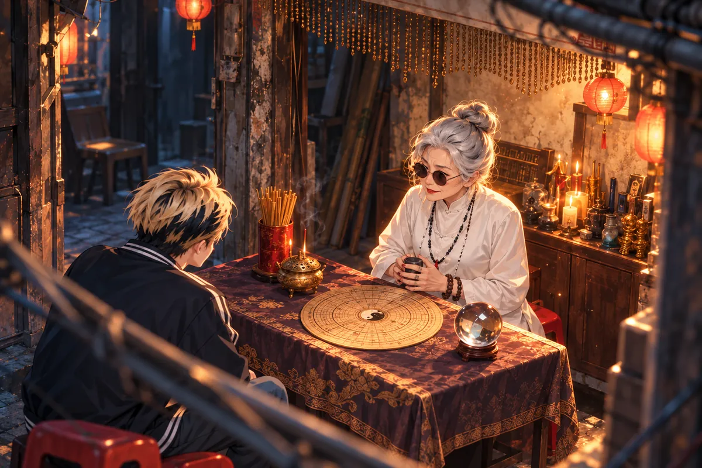
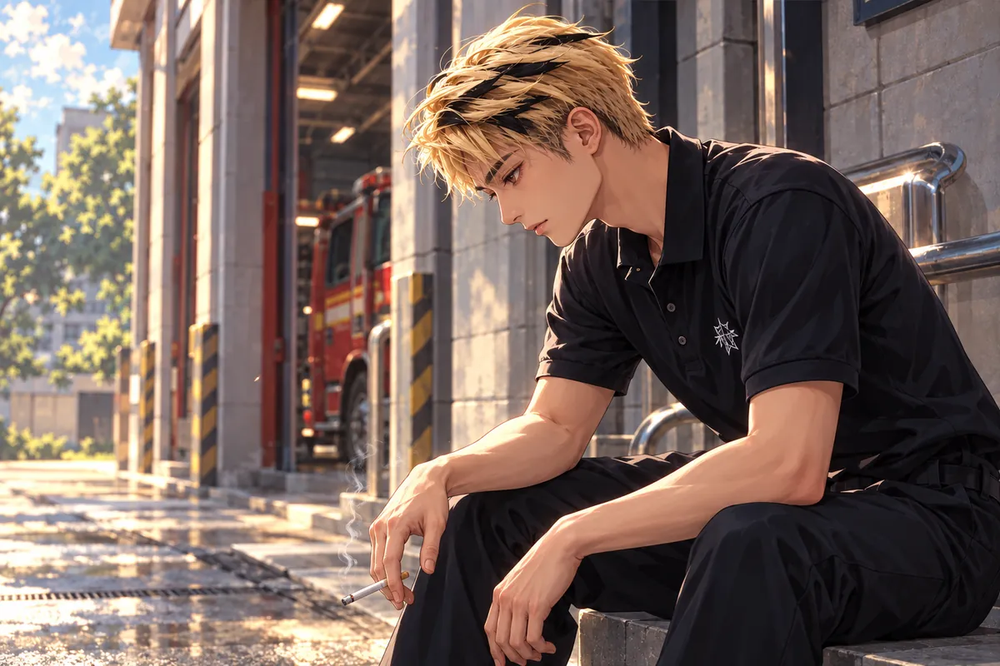
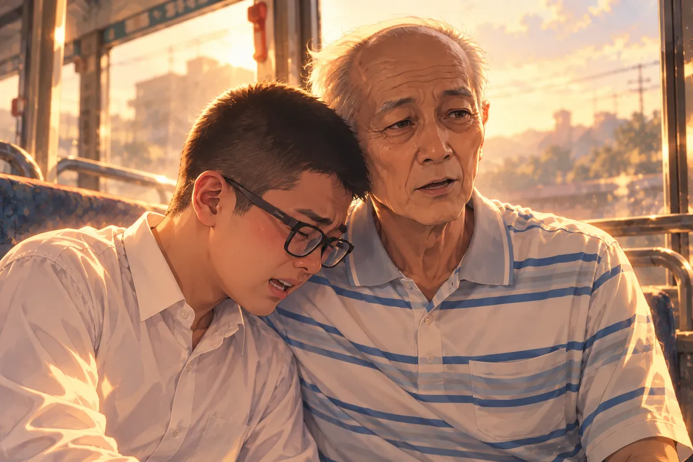
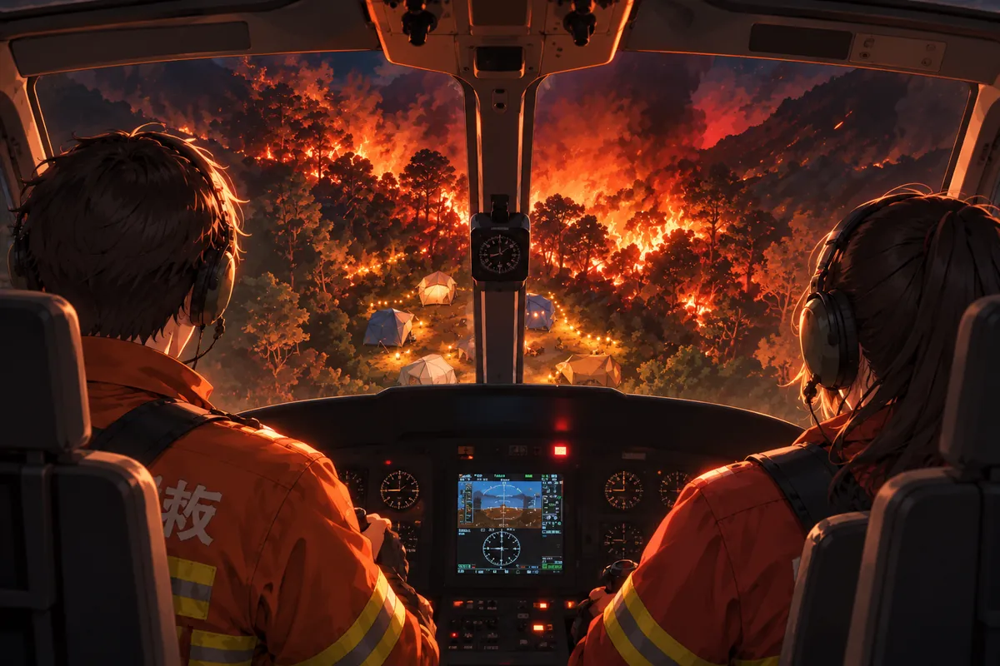

一九九九年九月二十一日，夜被地面撕開。
原本該待在原位的東西全動了。牆歪過來，櫃子裡的物件掉下，玻璃碎裂，黑暗裡找不到能扶住的地方。阿斌聽見媽媽的聲音，想往那邊走，卻被落下的東西攔住。
他不懂大人說的地震，只知道腳下不肯停，伸出去的手抓不到人。塵土嗆進嘴裡，他喊一次便咳一次，喊到後來，連自己的聲音都聽不真切。
有人靠近。他先怕對方踩到自己，往後縮，又立刻往前伸手。那個金髮男孩年紀也不大，額上都是灰，蹲下來找能讓他爬出的縫隙。
阿斌拉住他，指向裡面。他想叫那個人先救媽媽，又怕一放手，連眼前唯一還能看見的人也不在。男孩叫他抓緊，聲音很急，手卻沒有把他丟開。
阿斌卡在瓦礫裡，金髮男孩伸手拉他。孩子的哭聲越過揚起的塵土，反覆說媽媽還在裡面。救他的男孩咬緊牙，把人帶往空曠處。還有餘震，還不能回去。
許多年後，黃泉燒肉店裡，阿斌的媽媽坐下來，先為自己是外國人道歉。
小雨將鴨仔蛋端到她面前。
「這片土地上，不分國籍。」
熟悉的食物讓女人怔了一下。她碰了碰盤緣，才發現自己一直把手握得很緊。
「妳們怎麼會有這個？」她望著送來的食物，問完又趕緊抬頭，「我不是說不好，只是沒想到。」
「有人喜歡吃，我們就會做。」小雨說。
「這樣不麻煩嗎？」
「妳還沒吃，就先替廚房擔心了。」
她不好意思地笑，手仍擱在桌沿。
「我以前吃過。」
「那試試看，有沒有妳記得的味道。」
小雨把盤子放穩，沒有追問。她低頭聞了聞，才慢慢拿起筷子。
女人點了幾次頭，才把手移向餐具。過去總有人聽不懂她說話，她便先笑、先道歉，把一句話練到可以一次說完整。如今小雨等著她，沒有在她停下時替她接完。
鴨仔蛋的氣味慢慢近了。她想起家裡的吃法，想起忙完以後坐下吃東西的時候，也想起阿斌還小，對盤裡陌生的食物皺臉。她曾笑他，只挑熟悉的吃，長大怎麼辦。
現在，她不知道他長大後喜歡吃什麼。念頭一到，手就停了。小雨送來遺願馬卡龍，她抬眼，這一次沒有再為自己的眼淚道歉。
遺願馬卡龍讓她見到阿斌。阿斌已經長大。看清是她，他卻像當年那個孩子一樣，哭著喊媽媽。

媽媽走後，爸爸喝酒，同學欺負他。那些他沒有人可以告狀的日子，一說出口，便再也收不住。
她只好抱著他，說對不起，媽媽沒有保護好你。
「我會賺錢。」阿斌哭著說，「我們去沒有地震的國家。」
她望著孩子的臉，努力把現在的樣子記住。眉眼還找得到小時候的痕跡，下巴卻長出她從未見過的輪廓。他明明比從前高了，抱過來仍把肩膀縮著，像只要再縮一點，她的手就能像以前那樣把他整個護住。
阿斌說搬家，說賺錢，說以後可以怎樣。每說一件，便抬頭看她，等她點頭。他以為自己終於有能力安排未來，那場夜就能少帶走一些東西。
母親摸他的頭髮。她多想問工作累不累，問有沒有好好吃飯，問他如今晚上會不會還怕。可是孩子正說到最要緊的地方，眼睛裡全是期待，她不忍心打斷。
等他終於停下，她才告訴他自己要去哪裡。
阿斌的手抓得更緊。她沒有把他推開，只陪他站著，讓他再當一會兒需要媽媽的小孩。
母親把手貼在他的背上。她多想答應，多想真的跟他找一間不會搖晃的房子，煮一餐他愛吃的飯。
可是她要去天主那邊了。
能看見他長大，已經很好。
「在天堂還可以遇到妳嗎？」
她替他擦眼淚，像他仍是那個喊媽媽的孩子。
「媽媽會等你。」
＊ ＊ ＊
水晶球差點滾下桌，金髮青年順手接住。
算命阿婆盯著他，說他的親人應該都不在了。
大寶的手停在半空。
她說，這是天煞孤星的命，最親近的人會被剋死，寵物也一樣。只有救死扶傷的工作，或許能替他換一個好結局。

大寶沒有問她怎麼算出來的。那些名字，他不需要別人再替他念一次。
攤位上還擺著其他東西，幾張紙、一支筆，有人寫到一半的生辰。他原本只是路過，看到水晶球快掉下來，便伸手去接。做完這件事，照理就該走，阿婆那句話卻把腳留住了。
他看著自己的手，方才接球的動作快得不必想。很多事都是這樣，出勤時有人喊，他先過去；看見人跌倒，先扶；手裡拿得到什麼，就先拿。反而是有人問他自己怎麼樣，他才不知道該從哪一句答。
阿婆說親近的人，說寵物，他嘴角動了一下，沒有笑成。她替他挑出職業裡還能盼望的地方，他便順著那一句聽，好像今天走到這裡，總算能帶走一點比較不壞的話。
水晶球放回原位，仍亮著。大寶把手收回，走出去一段路，才發現自己忘了問算命費。
火場裡，他背著還有呼吸的人往外衝。
肩上的重量忽然沉了一下，他調整姿勢，讓對方的手別滑落。身後熱得很近，眼前卻全是煙，原本應該看得見的門框消失了。
他喊了一聲，沒有等到清楚的回答，只能憑剛才走進來時記住的方向往前。腳下碰到東西，他先踢開，再把人往上託。對方的呼吸貼在耳邊，微弱，卻還在。
視窗透出一點亮。大寶靠近，探了一下，煙把樓層和距離一起抹掉，他以為下去便能把人交到其他人手上。那一瞬，他想的全是肩上這個人能不能多吸一口氣。
落地的震動往上撞。他咬著牙，先喊快來人，等有人接住傷者，才讓自己的手鬆開。阿副衝過來的臉看不清，罵聲倒是熟悉得很。他本想回一句別那麼大聲，張口卻先咳了。濃煙奪去距離感，窗外的高度看起來像二樓，他跳出去，才知道那是三樓。
回到地面，他仍能說起自己的空間迷向，像只是在檢討一件工作疏失。阿副站在旁邊，看他一眼，沒把罵人的話說完。
消防車缺水，卻有人忙著搬救災機器人。
有人繼續往火場裡送器材，有人接著整理剛救出來的人，大寶站在一旁，等身體不再晃得那麼厲害。腳底發疼，他挪了挪重心，盡量不讓旁邊的人看出來。
那臺機器被推出來時，車輪在地面上轉得順，表面乾淨，連一點貼上去的灰都顯得多餘。大寶看了一眼，又往建築物看。裡面的煙還沒有散。
他不是討厭新東西，也不是非得什麼都用人命去補。正因為見過人在火裡怎麼找路，才會期待有一樣東西能真正走在前面。可是大家忙著替它挑位置，說等一下要有人來拍。
阿副的話接得快，語氣像玩笑，大寶卻沒笑。他把手套拉好，灰留在手腕上。有人叫他的職稱，他應了一聲，再次往那些忙亂的腳步裡走。
大寶問，搬出來幹什麼。
「給等一下來的媒體拍啊。」阿副的笑沒有暖意，「那臺比我家地板還乾淨。」
火場的灰貼在他們臉上，搬出來的機器亮得像另一個世界的東西。
大寶把頭盔扣緊，沒有再說話。
他還記得阿婆的聲音。倘若親近誰就會失去誰，那麼每次衝進火裡，能多背出一個人，也許便能讓那句話少應驗一次。
＊ ＊ ＊
隊長把他叫進去，第一句就問，是不是他向媒體爆料冷氣的事。
大寶剛出完任務，疲倦還黏在眼皮上。
辦公室的燈太白，他瞇了一下眼，仍站得端正。隊長看見他衣領上沒擦乾淨的灰，視線停了一瞬，接著才問冷氣的事。
大寶原本以為會談剛才的任務。哪裡沒接上、下次該補什麼，他都準備好了；這個問題卻使腦子空了一小段。隊長又問一次，他才抬頭。
門外有人走過，說話聲被關上的門截成幾個字。大寶聽見同事的聲音，想到他們等等還得輪班，想到休息室裡悶熱的空氣。那些不是能在會議裡畫出來的大事，卻天天等在每一個人回來時。
他問申訴有沒有用，沒有提高聲音。隊長也沒立刻答，手指敲了一下桌面，像那句話正好碰到兩人都知道、誰也不能輕易說出口的地方。
「內部申訴有用嗎？我們又不能罷工。」
上頭要他的考績打丙。這句話落下，辦公室安靜了一瞬。大寶想到休息時所有人擠在同一間寢室，想到黃副的打呼，忽然覺得連生氣都得先有睡眠才能支撐。
隊長最後說，多出來的電費他負擔一半，其餘從公費扣。別再往外講了。說完，讓他快去休息。
大寶沒有立刻動。隊長說電費自己負擔一半，他第一個想到的是，這個人也有貸款要繳。話說出去時，連自己都覺得彆扭，像為了讓大家睡一個覺，竟得先查清誰家還有什麼支出。
隊長把手裡的東西往旁邊一放，沒有再談上面怎麼說，只讓他去睡。大寶說謝謝，退到門邊，又忍不住提冷氣沒關。那句話本來很普通，在這間辦公室裡卻像還要等一次準許。
門開啟，外面的風也沒涼多少。有人問結果怎樣，他先點頭，說去休息。幾個人便各自散開，沒有誰真的拍手，也沒有誰想站著把剛才的事重講一遍。
他走到走廊尾，才伸手揉眼睛。肩膀鬆下來，疲倦就全追上了。
大寶離開辦公室，在吸菸區遇見阿副。

「復診去了沒？」
他沒有回答，先問能不能借安眠藥。
阿副皺眉。大寶說一直加班，哪有時間去診所。
阿副看了他一會兒，沒有照著那個理由往下聊。他們太熟，大寶什麼時候只是懶得跑，什麼時候是連安排一天的力氣都沒有，他多少聽得出來。
「你現在睡多久？」
大寶把目光移開，說哪知道，有睡就算了。
阿副用腳把地上一小塊灰踢到旁邊。菸在指間燒著，他沒再吸，先問等下的宣導誰帶隊。大寶答得立刻快起來，時間、地點、要拿的東西，說得沒有半點遲疑。
只有自己的事，說到哪裡都像缺一頁。
阿副沒給他一句漂亮的勸告，只說該去復診還是去。大寶點頭，點得敷衍，他便又看了一眼。兩人都知道說一次不會立刻辦到，可是這個話題若連提也不提，就更容易被排到所有勤務後面。那句話說得太順，像他已經拿同樣的理由，把自己推遲過無數次。
等一下還要去老社區宣導。老人不肯聽，延長線照樣一條接一條，講過的危險，下一次仍擺在原地。
有人提到股票，說賺了不少，乾脆一起離職。
兩人笑了一下，誰也沒真的接著談離職。
勤務仍然排在後面。大寶靠著牆，想著床，又想著還沒做完的事。阿副把目光移開，卻沒有走遠。
＊ ＊ ＊
社工敲不開的那扇門，最後由消防員破開。
晚餐袋子放在門邊，袋口還留著一點熱。社工說平常有時也要等，老人走得慢，聽見了會慢慢過來。今天卻等了太久，連裡面挪椅子的聲音都沒有。
大寶先喊，貼近門聽，阿副在旁邊問還有沒有其他聯絡人。社工急著翻資料，說剛才也打了電話。手機鈴聲像從門內傳出，又像被什麼擋住，沒能給出任何答案。
門開的瞬間，幾個人先停了一下。這是有人住著的地方，鞋還擺著，桌面有日常用的東西，並不因為裡面太安靜就變成空屋。
大寶蹲下去。老人身旁的紅包很顯眼，紙邊被摺過，上面幾個字寫得認真。他把目光收回來，先做眼前該做的事，沒有讓自己站著看太久。
老人倒在屋內，身旁擺著一個紅包，上面寫生日快樂。大寶蹲下去，阿副在旁邊接應。屋裡很安靜，晚餐卻還等在門外。
到了黃泉，老人最先擔心的仍是錢。
「這會不會很貴？」
老闆指指他的木牌，說帶著它來，不用付錢。老人這才放鬆一點，像終於不用為一頓飯再算上半天。
木牌在桌邊放著，他仍不放心，問是不是每樣都一樣。老闆說是，他才把手從口袋附近移開。那個地方如今沒有要拿出來的錢，他的動作卻留著，以前每次坐下吃，都得先摸一摸。
他看了看甜點，又問會不會太甜。話說完先笑，像怕別人覺得老人家囉嗦。老闆讓他不急，先坐一會兒。
店裡有人把盤子收走，碗疊在一起，聲音讓他想起飯後洗碗的時候。那時總覺得事情還很多，一件做完又有下一件，現在椅子拉好，他卻不知道除了等，還能做什麼。
老闆把遺願馬卡龍放到合適的位置，沒有替他選執念。老人望著那一點甜，眼睛慢慢低下去，先伸手將木牌擺正，才拿起盤中的東西。
馬卡龍的甜味退去，公車的引擎聲接了上來。
年輕人坐在一旁，戴著眼鏡，看著他掉淚。
「你很像我阿公。」
公車隨路面晃了一下，老人扶住座椅邊，讓年輕人坐穩。那雙眼鏡後的臉，他看得很仔細，一面看一面笑，卻又不敢太早叫出心裡的稱呼。
年輕人說阿公，說以前的事，講到一半不好意思，抹了一下眼角。車裡還有人，這樣對陌生人哭太奇怪，他便想停；老人卻拍拍身旁的位置，讓他再靠近些。
窗外的招牌從後面退去，站名一個個報。年輕人已經長大，肩膀比記憶裡寬，坐著時腿也不像從前那麼短。老人想問的很多，偏偏一句句到了嘴邊，只變成你好嗎、最近好嗎。
他怕問得多，對方又會拿最懂事的回答來安慰自己。於是他把紅包摸出來，先在掌心壓平。那幾個生日快樂的字，是他不會改口、也不想讓車聲蓋掉的話。
老人拍拍旁邊的位置，讓他坐近。說爺爺一定很疼你，看見你長這麼大，也一定開心。

年輕人低頭，眼淚掉在褲子上。老人把紅包放進他手中，沒有催他收好，只看了他很久。
車要到站了。
「爺爺要下車囉。」
年輕人握住紅包，突然抬起頭。這個人怎麼知道今天是他的生日？
車門關上，他那聲阿公才終於喊出來。
窗外，老人揮手。車往前開，身影一點點縮小，他仍然笑著，像終於完成了一件放不下的事。
乖孫長這麼大了。
他很快樂。
＊ ＊ ＊
便當冷了，電視裡的球賽還沒結束。
筷子擱在盒子上，有一支滑進菜邊，他撿起來，仍沒有接著吃。電視的音量不大，主播卻始終說個不停，填住房裡每一次想靜下來的空隙。
大寶用遙控器換過一個臺，又換回來。他不是真的非看這場不可，只是熟悉投球、揮棒、出局的順序，跟著看，不必另外決定下一件事。有人在歡呼，他望著螢幕，慢了半拍才想起是哪一隊。
飯菜明明還有很多，他卻早就不餓。盒蓋放在旁邊，摺痕頂著桌面，他伸手把它壓平，想著等等要丟，手卻沒有再動。
睏意來得很慢，像有人從後面一點一點把聲音拉遠。他原本只想瞇一下，等這個半局結束再說，醒著時沒來得及安排好的事，很快便全留在夢外。
大寶一個人坐著，眼睛跟著球走，心思卻不知道落在哪裡。等他睡著，熟悉的聲音先於夢的景色出現。
外婆嫌他又吃放太久的飯。
「外婆，我現在很好。」大寶急著說，「有工作，也有吃飯。妳看，我都長這麼大了。」
「我看到了。」
「妳不用擔心，我真的——」
外婆伸手拍拍他。「先讓我說一句，好不好？」
大寶立刻閉嘴，眼睛卻還追著她，怕一停，她便走了。
「我又沒嫌你長得不夠大。」外婆看著那盒便當，「你吃這個？」
他低頭。「方便嘛。」
「坐下吃。站在我面前一直說很好，飯也不會自己跑進肚子。」
大寶笑了一下，笑聲很短。他坐下，筷子拿在手裡，還是捨不得把眼睛從她臉上移開。
外婆要去投胎了。走之前，來看看他。
大寶先笑，笑完卻不知該說什麼。這個訊息在她嘴裡很平常，好像要去買菜，或者要先回房睡一下，叫他自己把燈關好。可是他已經知道，有些去就不是過一會兒能回來。
「這麼快喔？」
她看著他，像聽見他小時候每次挽留的聲音。大寶不好意思，趕快說不是要她別走，只是好不容易夢到。說到這裡，他又停，怕夢裡提到夢，就會立刻醒來。
外婆沒有催他。她問生活，大寶便挑可以說的講，講工作裡有人幫忙，講自己吃得下、也睡得著。那些回答湊在一起，像一張替她準備好的近況表，寫得很整齊。
外婆看了他一會兒，沒有拆開每一句，只讓他坐近。大寶挪過去，膝蓋幾乎碰到她，心裡那股慌才肯稍微停一下。
她提到二十幾年前的地震。那場地震之後，家裡只剩他一個人。
大寶低下頭。外婆的手近在眼前，他卻不敢伸手，怕一碰就醒。
「我在下面遇到你女朋友了。」
小雨。外婆說她很好，也記得他喜歡吃什麼。
兩個把他的生活記在心裡的人，如今竟在他到不了的地方見了面。
他想問小雨最近好不好，想問她有沒有生氣，還想問她是不是也覺得自己過得太亂。這些話擠在喉嚨口，只要開口一件，其餘的就會跟著來，他怕沒時間，又怕真的聽到答案。
外婆提起她記得的口味，大寶低頭，抹了抹膝上的布料。原來不是只有自己還記得。那個人沒有因為到了別的地方，就把他那些小毛病全忘了。
外婆叫他去玩，他答好，答得比平常快。她接著說將來再遇見，可以講趣事，他便想，自己到時候是不是還有東西能講。最近的日子，出勤、回家、睡醒，翻來覆去都是相似的幾件事。
他看著她，忽然很想真的做一件能拿去講的事，不是為了讓誰放心才說自己很好。可是在那之前，他還想再聽她多說幾句。哪怕只是嫌那盒便當。
「該玩就去玩。想做什麼，就去做。」
外婆說，等下次相逢，他就可以講講後來的趣事，讓小雨也聽聽。
大寶想答應，想問她還能不能多待一會兒。球賽的聲音卻突然回來，桌上的便當，房間的牆，一齊把夢擠散。
「外婆！」
他坐直，手伸向空處。
電視照著他的臉。沒有人再罵那盒冷飯。大寶慢慢把手收回來，眼淚才落下。
＊ ＊ ＊
山林燒起來時，還有人困在露營地。
訊息接進來時，位置一再重複，背景卻嘈雜得難以分辨。有人說風向變了，有人說原來能走的地方已經過不去。大寶聽完，將需要帶的東西核對一遍，手上的動作比說話快。
上空俯看，林木的輪廓被煙切成一片片，火有時藏在下面，有時突然竄到能看見的地方。受困者朝機身揮手，小小的動作遠得像沒有力氣，直升機一靠近，卻又全變成急迫的呼喊。
他落到能接人的位置，先讓大家不要亂動。孩子抓著大人的衣服，大人一直問還有沒有別人，他便一面答，一面把眼前的人往安全的方向引。
直到最後一個人接上，他才有空抬頭看周圍。剛才還在遠處的熱，已經挪到身邊；風一吹，煙越過他們方才站的地方，把來路全蓋住。
地面進不去，直升機越過火線。人接上了，熱氣卻一層層托住、攪亂機身，升力不夠，飛機遲遲爬不高。
大寶往窗外看。火正在靠近。
機艙裡的人擠在一起，沒有人敢問為什麼還不走，所有人卻都在看駕駛。機身震動，腳下傳來持續的轟響，越是大聲，越顯得那一點移動不夠。
有人把孩子抱得太緊，孩子哼了一聲，她才鬆開，手仍捨不得挪開。大寶看見，讓他們抓好、不要亂動。自己說完才發現，大家已經抓得很緊，沒有再多一分力的地方。
他往外看，又往裡看。眼前都是剛才好不容易接到的人，他們還穿著來露營時的衣服，有人腳上的鞋少了一隻，連那一隻都顧不上找。
他不想讓這些人看見自己也在猶豫，便把聲音放得和平常一樣。說下去擋一下，好像只是出門把東西挪開，等對方點頭便能做完。可是手握住滅火器時，掌心比想像更緊。
他說自己下去擋一下，拿起滅火器便跳了下去。
火線比人高。濃煙壓上來，裝備的輪廓很快模糊，無線電裡有人喊小隊長。那個聲音像隔著很遠的水，他忽然想起算命攤的水晶球，想起阿婆說，最親的人會被他剋死。
他不想再聽見這種結局。
受困的一家人正抓緊座椅。大寶竟又出現在他們面前，問：「看過七龍珠嗎？」
沒有人知道這時候為什麼要問這個。他讓大家閉上眼睛，把手舉起來，一起給直升機元氣。
最先照做的是孩子。小小的手離開大人的衣服，伸向機艙頂，又因為身體晃動縮了一下。大寶點頭，讓他再試。
大人看著那隻手，慢慢也跟著舉。有人覺得荒唐，嘴唇動了動，終究沒有說破；在這個地方，每一件能讓他們做的事，都比坐著等還好。
閉上眼的人不知道身旁誰在哭。哭聲很輕，被機身轟響吞掉，大寶卻看見那張臉上的淚。他沒有叫對方振作，只讓大家想著一件事，把手再舉穩一點。
那個問七龍珠的人笑了，笑得像真的見過這個辦法有效。孩子學著喊，聲音破破的，又喊一次。
機身往上抬時，他們一開始還不敢相信。有人睜眼，先看窗外，再看旁邊的人，直到地面終於離遠，才鬆出一口一直不敢吐的氣。
小手、大手，在晃動的光裡慢慢抬起。有人還在哭，有人努力照做。大寶看著他們，露出一點像平常出勤時的笑。
飛機開始上升。

阿副罵了他一句。熟悉的口氣，藏著來不及收好的害怕。
火海在窗下退遠。乘客抓緊座椅，久久不敢放下手。大寶望著他們。無線電仍有人喊小隊長，火海裡卻已看不清任何人影。